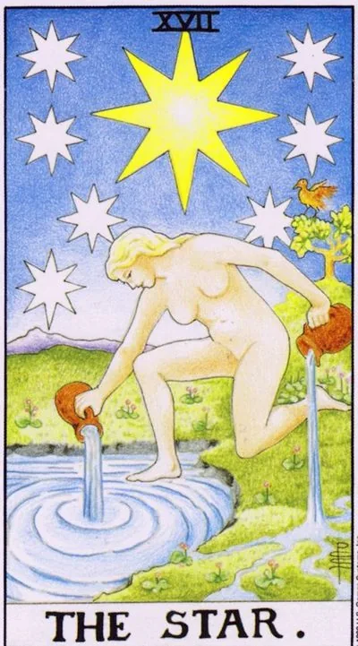

Major Arcana · XVII
XVIIThe Star
After any storm, the sky can clear up: hope, quiet healing and a source that is enough for everyone.
Archetype and core meaning
The star comes after the Tower, and the place in the deck explains it: when the superfluous collapses, you can finally see in the sky. The figure by the water pours without counting and without fear: the inner source does not become impoverished by sharing it.
It's a card of the quiet gifts. Not triumph, but breath; not victory, but the belief that it's worth going further. It heals after loss slowly, without miracles, but inevitably, like grass growing through asphalt.
The aquarius nature of the arcanum calls not where it is brighter, but where yours is, and the recipe for trust is simple: one foot in the water of intuition, the other on the solid ground of practice.
Daily life
An easy day without feats: what has been pressing recently lets go of itself. It's a good walk, water, creativity without purpose or criticism, a call to an old friend. Recovery is noticeable in the small things - in the morning you want to get up again. Share warmth: generosity is coming back quickly and with interest.
Work and career
The work is breathtaking, the project is given a second wind, the idea is given credit, the team is given air. The card is conducive to creative planning, learning and the future: no money rain, but the river cooks. Work on inspiration, today it is not a whim, but fuel. What is sown now will rise generously, a little later.
Relationships
The wounds of the past heal, and the heart is heard again. The pair returns an optional tenderness: an evening is worth more than a hundred explanations. After a hard experience, the card promises a person who breathes easily next to him, often met unexpectedly and "off the list." The love of this card is soft: like water is simple and indispensable.
Health
One of the best recovery cards: strength is restored, treatment hits the target, the psyche releases stress. Especially favorable for rehabilitation, water procedures and everything soft. Take the course to the end The improvement will be gradual and sustainable. Useful sleep, clean water and time in nature.
Spiritual meaning
The star is hope as a virtue, not self-comfort, and in practice, it's charged with water and talismans, opens the creative channel, builds work with the future, and seven small stars around the big one are a reminder of the alignment of the inner centers.
The sky is tightened: faith is lost between deeds, and it seems that the inner source has dried up.
Archetype and core meaning
The upside down Star is the night that the sky was forgotten, and it's okay, because the belief that anything makes sense disappeared, and the person continues to do things, but it's dark inside, like a house with the electricity turned off.
Often it's the fatigue of the giver, the water that's been poured on others, on work, on other people's crises, and you don't notice where your own comes from, and the frustration with people, the path, and yourself sounds equally deaf.
The arcana has the pride of the resentful idealist: the world is not perfect, and he punishes everyone with distrust, and heals it in one way: by allowing himself to want again.
Daily life
A day in gray: nothing bad happens, but joy passes by, like behind glass. Don't ask for the positive, start small: hot shower, favorite music, ten minutes of silence. Put aside big decisions: nothing grows in a dry place, first pour yourself.
Work and career
Creative and motivational: work has become a mechanic, ideas seem silly at the start, other people's successes are annoying. You may have been doing someone else's work for a long time, talent is asking for its own channel. Don't tear up hot, but put back into the schedule what fed your soul: learning, experimenting, talking to people of your own element.
Relationships
Feelings under a layer of ash: after a grudge, it is hard to believe that love is gentle. In a couple, it is possible to be cold - not from dislike, but from fear of getting burned again; the partner needs proof of security, not reproaches. The card honestly says to the lonely: you are not defending yourself from people, but from your own hope. Start with friendship - it is more honest than romance now.
Health
Decline without a clear illness: sleep doesn't restore, pleasure doesn't heal, vitamins seem to pass by, usually due to a long disregard for one's own needs: the body has gone into a state of economy, help soft regime and mandatory psychological relief.
Spiritual meaning
Mystically upside down, the channel is closed: the source is there, the tap is closed with resentment and distrust. Practices go idle, mascots are silent, predictions do not come true. Start by reconnecting with yourself: diary, water, honest answers to simple questions.
🌿 In brief
The main idea
A star is not just hope; the deep meaning of a card is understanding the world. When the pieces of information are put together, the person begins to see where he is going and what he can really hope for.
How it manifests
Illumination, insight, information that suddenly adds up to a clear system.
Work.
Internet, information, media, analytics, public projects, volunteering, innovations.
In a relationship
Openness and understanding. When a person really knows what's going on between them and their partner, they don't have to speculate.
Self-development
Insight, inspiration, the ability to hear your own "music of the higher spheres."
The shadow side
Hope becomes an unreasonable expectation, and another is star disease, where your own light becomes so bright that you can't see other stars.
Feature of the school
The star is connected to Aquarius and the XI house, and the main message of the card is that it is good to shine on others, but you should not forget about yourself.
📜 In detail — lecture extracts
Essence of the card
He dismisses Waite's "flat" interpretation ("card of hope"): this can only be said on a simple level, saying that a person hopes that it will be good. The core of the card is the truth and the folding of the picture of the world: according to the High Priestess, "the truth is hidden in the veils" - you feel that you are right, but you do not understand why, and in the Star the truth is realized by the head - "the puzzle folds, all the pieces - into one big constellation," there comes illumination. Because the figure is naked - "truly without a veil": the truth is not hidden, it is revealed. Hope - you are produced and you hope, and you are over.
Upright position
- In the equations, he divides the meanings into four elements (fire - society and desires, land - finance and property, air - action and self-development, water - emotions and personal life).
- - Work/social: Society and its values, many "little stars" - individual consciousnesses; altruism and unselfishness (“gives away the last shirt, pours water on someone else’s mill”), volunteering, work without pay; informality and inexhaustible “strangeness of the water” - do not do what is accepted, and allegedly meaningless for the layman, although inside everything is understood. Information work: insights, compilation, some numbers that add up to an incomprehensible model to outsiders (“why they pour water, they understand”). Finance/land: Internet ("everyone is a star, no one can eclipse you"), information analysis, communication markets, media, white accounting (all wiring is open, secretly Black bookkeeping is a Priestess, a rejection of ambition (example of Keanu Reeves): refused to pay / shared with stuntmen, understanding the needs of society, innovations of any kind, investments with a view to the future, calculating factors and risks.
- Relationships/water: Awareness — all the relevant information about the relationship is there and is “naturally in the head”: you know what the partner feels and where everything is going; the picture of the relationship as a whole. Emotional openness and honesty — “free sharing of information helps you see the picture of the world as it is.” But: overly open can be deceived, and the aquatics tend to accept the point of view of their circle (a personal example of a lecturer about artists communities).
- Self-development / air: inspiration – “the ability to hear the muse, music of the higher spheres”; insight / insight (Tesla, drawing a ready-made drawing with a stick in the sand); sincere vision of himself against the background of other stars and understanding his place in the constellation-society; self-esteem, dedication, bright future, paving the route through the stars (seafarers, navigators).
- Guide star: a hint of where to go and what is ahead; a symbol of the path, goals and goals.
- Starsick is used only as a metaphor for high self-esteem.
Negative meaning
The formula for neutrality is, "No matter how you turn a card, its basic meaning does not change - the star was and remains a star." This is the card of "expectation of the future": a positive view of the future is hope, negative is fear; "essentially the same thing, just in the negative." The truly negative one appears only in the baseless hope: to hope without relying on an understood picture of the world is already an illusion and a deception, but deception and self-deception in the school system belong to the next card, the moon ("he who is warned, is armed").
School emphases and distinctive points
- Astro system: spreads the senior arcana in 12 signs of the zodiac (marks roll call with Yuri Khan's schemes). Star - the eleventh house, Aquarius, the interaction of Uranus primarily with Saturn; in the 11th house live two cards - Star and Moon (hopes and fears). Connection of the 5th and 11th houses: the Lion Sun shines to the audience, the audience - "night sky" with the stars and the moon.
- Why is the star big and yellow: it is essentially the Sun, the nearest star; the knowledgeable person sees the picture of the world as true: the Sun is only one of the stars, and no brightest person is a part of the society with which it shines. The rest of the stars are many minds.
- Masonic series: a flaming star is a “symbol of light and divine guidance of human journey through life”; the one who has learned the truth is likened to it and gives knowledge to others, “lives for the sake of others, shines with his light illuminating the lives of other people.”
- - Mythology: Ganymede ("the delightful soul"), kidnapped by the eagle of Zeus the cupbearers of the gods, pouring nectar, - a symbol of the transformation of man into an immortal being, the prototype of an angel; It's always a young image. Female hypostasis Hebe, the goddess of eternal youth; card-piece It is not Venus or Persephone. Nectar "necrosis": communication with dead water of Russian fairy tales and ritual drinks of initiates (altered states, "communication with the gods"); - including yoga, holotropic breathing, meditation; He distances himself from mysticism.
- - Biblical-Sumerian series: Star of Bethlehem and Magi/three kings of three ages (old man, husband, youth) with large, medium and small jars - the scale of experience and the transfer of knowledge; magicians in the robes of Mesopotamian sages, patrons of travelers. Moses in Sinai - prophet, "voice of God": the Ten commandments as an insight-compilation of the experience of the community; the outcome - a long way for the change of generations of slaves by free. Zigurats, Chaldeans, counting by the dozen, the sublime = godly.
- - Russian-Slavic series: the Magi (one root with "magic"), dead and living water; echo of the previous sign - pan / faun with a flute and music of the spheres, Baba Yaga, huts of ancestors on chicken legs, shamanism.
- - Movie: Gandalf - a messenger of hope, "served all mankind", white - luminous after the battle with Barlog; Spock ("Star Trek") - cold logic and Aquarius difficulties with emotions; the witch - rather an alloy of Aquarius with Scorpion, "does not fit in"; the best Aquarius image - Dr. House: a diagnostician who folds a solution from disparate pieces, throwing a ball into the wall (as a figure "pouring water into the water" - external nonsense, inside the thought), lame (each waterer has a tsarrow sign) (the Aquariuser is a tsarist against the cy) (the cystor: the cylonist himself); "The Aquarix" (the Aquariuser is a sign)
- - Techniques and morality: first give the symbolism/essence of the card - the values themselves will be attached in the work; detailed practical meanings he gives in paid classes. "Star disease" - a weak point: too bright star eclipses other people's points of view; "the right lion shines for people, the right water always must remember that besides people there is also himself" - otherwise "society will eat and spit out." The motto of Aquarius - the epitaph of the pan: "The world caught me, but never caught." Emotions in the discussion: "the right lion shines for people, the right water waters, there is no lectures, but the Bafaha quotes in the Council does not give the speech.
Keywords
- hope for the future • guiding star • truth without cover • folding puzzle, picture of the world • illumination, insight • compilation of information • altruism, unselfishness • flaming star • breadth of views • informality, strangeness of the watery
- ---